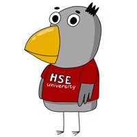

I like how HSE emphathise the importance of English in our future career. For example, the first study report that I wrote as a HSE student was on topic related to vitality of English in our modern world. Around two billion people across the whole world can speak English and understand one another. Science literature treat it as a main work language. HSE also implemented the system of evaluating of work of teachers which is quite unique in Russia and now, in my opinion, play essential role in improving HSE. It is also worth mentioning of how much faculty members are helpful. They arrange consultations when the material is difficult, ready to answer email when students are struggling and ask for help and make sure that the way they explain material is clear and is not overcomplicating. HSE also conducts scientific events and recently started competitive programming tournament.
